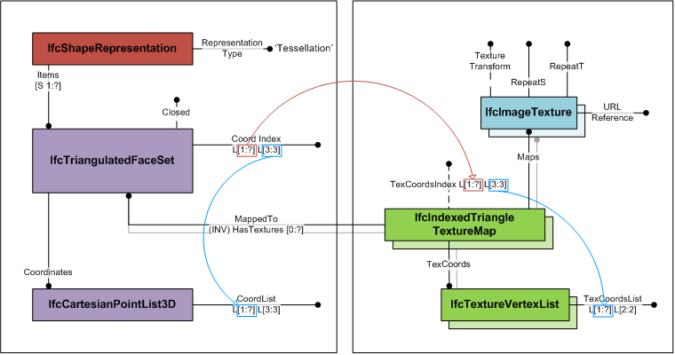
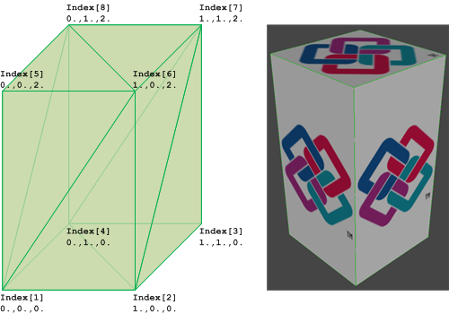

8.12.3.20 IfcIndexedTriangleTextureMap
| Liste von Indizes für Texturen auf Dreiecken |
The IfcIndexedTriangleTextureMap provides the
mapping of the 2-dimensional texture coordinates to the
surface onto which it is mapped. It is used for mapping the
texture to triangles of the IfcTriangulatedFaceSet.
The IfcIndexedTriangleTextureMap defines an index
into an indexed list of texture coordinates. The
TexCoordIndex is a two-dimensional list, where
- first dimension is the unbounded list of faces
corresponding to the list of triangles defined by
CoordIndex at IfcTriangulatedFaceSet;
- second dimension is the fixed list of three indices to
texture vertices cooresponding to the fixed list of indices
to vertices at IfcTriangulatedFaceSet
The TexCoords defined at supertype
IfcIndexedTextureMap are a two-dimensional list of
texture coordinates provided by two parameter values. Each
index of the second dimension list of TexCoordIndex
points to a texture vertex in TexCoords.
Figure 339 shows the use of IfcTriangulatedFaceSet with textures.
|

|
|
|
Figure 339 — Indexed triangle texture map
|
|
Figure 340 illustrates an IfcTriangulatedFaceSet represented by
IfcTriangulatedFaceSet.CoordIndex: ((1,6,5), (1,2,6), (6,2,7), (7,2,3),
(7,8,6), (6,8,5), (5,8,1), (1,8,4), (4,2,1), (2,4,3),
(4,8,7), (7,3,4))
IfcCartesianPointList.CoordList: ((0.,0.,0.), (1.,0.,0.),
(1.,1.,0.), (0.,1.,0.), (0.,0.,2.), (1.,0.,2.), (1.,1.,2.),
(0.,1.,2.))
IfcIndexedTriangleTextureMap.TexCoordsIndex: ((1 4 3), (1 2 4), (3 1 4), (4 1 2), (8 7 6), (6 7 5), (4 3 2), (2 3 1),
(5 8 7), (8 5 6), (2 4 3), (3 1 2))
IfcTextureVertexList.TexCoordsList: ((0. -0.5), (1. -0.5), (0. 1.5), (1. 1.5),
(0. 0.), (0. 1.), (1. 0.), (1. 1.))
|

|
|
|
Figure 340 — Indexed triangle texture map geometry
|
|
HISTORY New entity in IFC4.
XSD Specification:
<xs:element name="IfcIndexedTriangleTextureMap" type="ifc:IfcIndexedTriangleTextureMap" substitutionGroup="ifc:IfcIndexedTextureMap" nillable="true"/>
<xs:complexType name="IfcIndexedTriangleTextureMap">
<xs:complexContent>
<xs:extension base="ifc:IfcIndexedTextureMap">
<xs:attribute name="TexCoordIndex" use="optional">
<xs:simpleType>
<xs:restriction>
<xs:simpleType>
<xs:list itemType="xs:long"/>
</xs:simpleType>
<xs:minLength value="3"/>
</xs:restriction>
</xs:simpleType>
</xs:attribute>
</xs:extension>
</xs:complexContent>
</xs:complexType>
EXPRESS Specification:
|
ENTITY IfcIndexedTriangleTextureMap
|
|
|
| TexCoordIndex | : | OPTIONAL LIST [1:?] OF LIST [3:3] OF INTEGER; |
|
 EXPRESS-G diagram
EXPRESS-G diagram
Attribute Definitions:
Inheritance Graph:
|
ENTITY IfcIndexedTriangleTextureMap
|
|
|
| TexCoordIndex | : | OPTIONAL LIST [1:?] OF LIST [3:3] OF INTEGER; |
|
 Link to this page
Link to this page